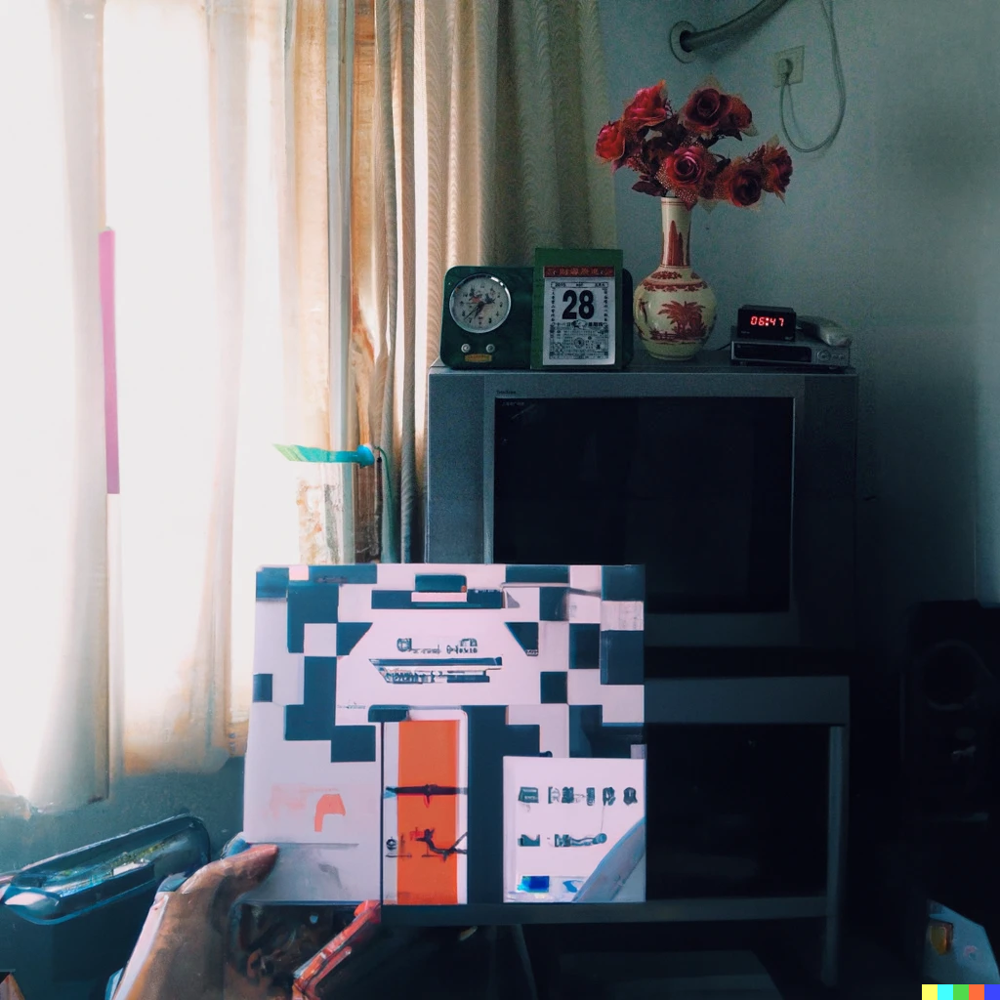

Alapvető területei
A mesterséges intelligencia területeit besorolhatjuk szoftver- és hardveralapú kategóriákban.
Szoftveralapú
Ide sorolhatjuk a virtuális asszisztenseket, képelemző szoftvereket, keresőket, beszéd- és az arcfelismerő rendszereket.
Hardveralapú
Ide sorolhatjuk a robotokat, önvezető autókat, drónokat és a dolgok internetjét.
Felhasználási módszerei
Annak a kérdéseit, hogy a mesterséges intelligenciának milyen felhasználásai vannak, illetve lehetnek egy átlagos felhasználóra nézve, egy ezzel foglalkozó barátomnak, Décsi Domokosnak tettem fel. Arról kérdeztem, hogy konkrétan milyen alapvető információkat tud az MI-ről, milyen területeit ismeri és mire használhatjuk azokat, ő, mint felhasználó mire használja az MI-t, az új MI-ről, a ChatGPT-ről (GPT3-ról) való véleményét, és arról az elméletről való véleményét, hogy egyszer az MI képes lesz világuralomra törni.
Az interjúban említett feljavított VHS digitalizáció
Az interjúban említett felhasználási módszerek
Videójavítás
Nagyon sok mesterséges intelligencia képes egyes rosszabb felbontású videóknak minőségét feljavítani. Mint ahogy hallottuk az interjúban, akár VHS felvételek feljavítására is alkalmas, ami példáúl régi emlékek vagy filmek, videók élvezhetőségét növeli. Ez nagyon sok helyzetben hasznos MI lehet.
Képgenerálás
Nem csak videókba, hanem képekbe is képes belenyúlni az MI. Akár, mint ahogy hallottuk, tetszőleges kornak megfelelően képes festményszerű képeket generálni, vagy akár általunk megadott szöveg szerint generálni egy képet, ami általában mindig festményszerű.
MI által generált albumborító
Másik érdekes MI a képgenerálás kategóriában a GauGAN2 AI, ami képes emberi firkákból élethű tájképet, fényképet készíteni.
AI által generált tájkép emberi firkákból
ChatGPT, GPT3
Nemrégiben lett népszerű a ChatGPT AI, ami a zártkörben elérhető GPT3-ra alapszik. Ez a mesterséges intelligencia úgy működik mint egy igazi asszisztens, bármikor bármilyen körülmények között kérdezhetünk tőle kérdéseket, és arra legtöbbször jól megfontolt és részletes választ kapunk. Mivel nem egy emberrel beszélünk, szinte hihetetlen mennyi témában jártas és milyen gyorsan tud nekünk válaszolni. Akár nehezebb matematikai problémakat is képes megoldani, vagy programokat írni az általunk megadott programozási nyelvben.
Minden Infó a Mesterséges Intelligánciáról
© 2022
Stonawski Benjamin, 10. B
Az oldal IKT Projektmunkára lett elkészítve.